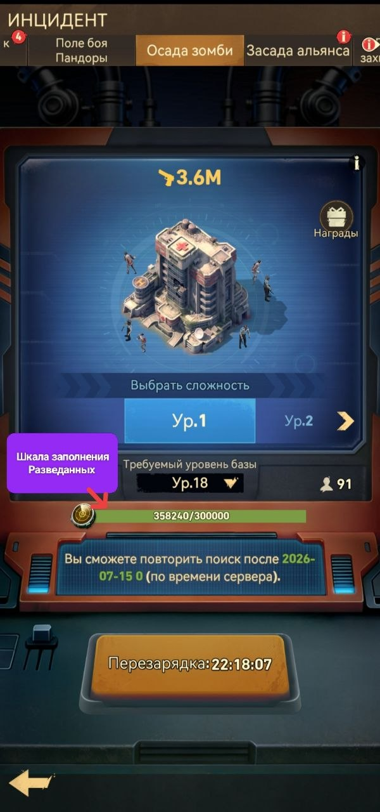
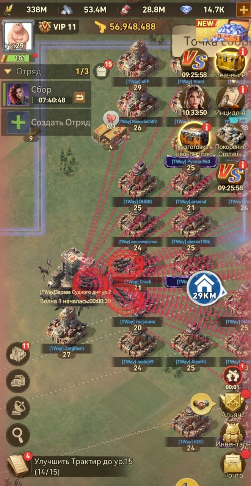
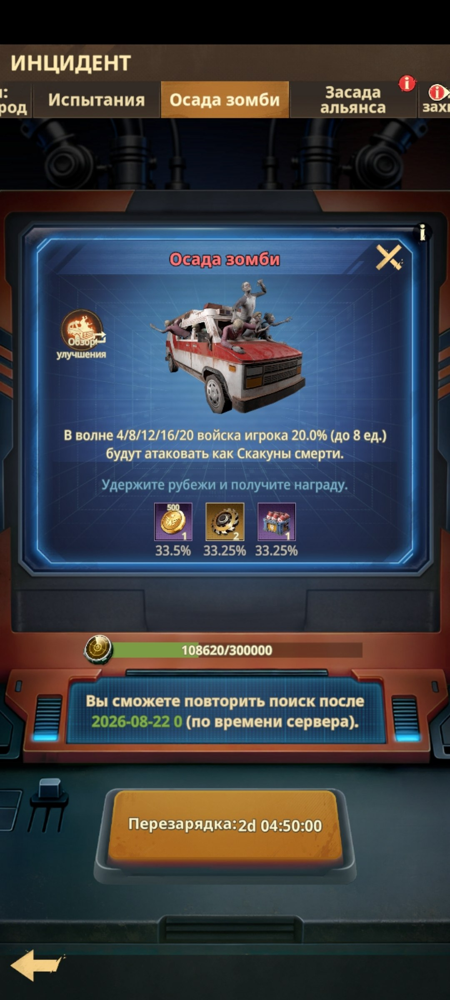

🏰 Осада
🏰 Осада Зомби Осада Зомби - это массовое альянсовое событие. Активировать её может офицер R4–R5 после выполнения необходимого количества заданий Радара. На каждый уровень Осады допускаются игроки с определённым уровнем Базы (информация во вкладке «Инцидент» → «Осада зомби»).

🏰 Осада Зомби - общий вид
⚔️ Как проходить Осаду Нужно отбиться от 20 волн зомби, мощь которых растёт с каждой волной. Обязательно поставьте галочку на «Гарнизоне» в здании «Линия обороны» и своевременно лечите солдат. Как только ваша База загорится - вы выбываете из события. • Если мощь вашего самого сильного отряда выше требуемой - защищайтесь только им. • Если мощь недостаточна - используйте 2–3 отряда.

⚔️ Прохождение Осады
🏆 Награды за событие приходят по почте.
Начиная с 7-го уровня Осады на 4-й, 8-й, 12-й, 16-й и 20-й волнах случайных игроков Альянса будут атаковать Скакуны смерти с повышенным уроном. Этих игроков необходимо укреплять - отправлять отряды к ним на помощь. За успешное отражение атак Скакунов смерти участники получают различные награды по почте.

🏰 Скакуны смерти - атаки на 4/8/12/16/20-й волнах